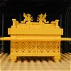

|
|
|
Exodus 25 |
|
| 25:1
And the LORD spake unto Moses, saying.... |

 (25:1-40) "And the LORD spake unto Moses, saying......" (25:1-40) "And the LORD spake unto Moses, saying......"
God wastes seven chapters on instructions for making tables, curtains, candlesticks, snuffers,
girdles, bonnets, perfumes, etc.

The Ark of the Covenant
|
| 25:2
Speak unto the children of Israel, that they bring me an offering: of
every man that giveth it willingly with his heart ye shall take my offering.
|
| 25:3
And this is the offering which ye shall take of them; gold, and silver,
and brass,
|
| 25:4
And blue, and purple, and scarlet, and fine linen, and goats' hair,
|
| 25:5
And rams' skins dyed red, and badgers' skins, and shittim wood,
|
| 25:6
Oil for the light, spices for anointing oil, and for sweet incense,
|
| 25:7
Onyx stones, and stones to be set in the ephod, and in the breastplate. |
|
| 25:8
And let them make me a sanctuary; that I may dwell among them. |
|
| 25:9
According to all that I shew thee, after the pattern of the tabernacle,
and the pattern of all the instruments thereof, even so shall ye make it. |
|
| 25:10
And they shall make an ark of shittim wood: two cubits and a half shall be
the length thereof, and a cubit and a half the breadth thereof, and a cubit
and a half the height thereof. |
|
| 25:11
And thou shalt overlay it with pure gold, within and without shalt thou
overlay it, and shalt make upon it a crown of gold round about. |
|
| 25:12
And thou shalt cast four rings of gold for it, and put them in the four
corners thereof; and two rings shall be in the one side of it, and two rings
in the other side of it. |
|
| 25:13
And thou shalt make staves of shittim wood, and overlay them with gold. |
|
| 25:14
And thou shalt put the staves into the rings by the sides of the ark, that
the ark may be borne with them. |
|
| 25:15
The staves shall be in the rings of the ark: they shall not be taken from
it. |
|
| 25:16
And thou shalt put into the ark the testimony which I shall give thee. |
|
| 25:17
And thou shalt make a mercy seat of pure gold: two cubits and a half shall
be the length thereof, and a cubit and a half the breadth thereof. |
|
| 25:18
And thou shalt make
two cherubims of gold, of beaten work shalt thou make them, in the two ends
of the mercy seat. |
 (25:18) "And thou shalt make two cherubims of gold." (25:18) "And thou shalt make two cherubims of gold."
God tells Moses to make some
graven images for him, contrary to the
commandment given in Exodus 20:4and Deuteronomy 5:8.
Is it OK to make graven images?
|
| 25:19
And make one cherub on the one end, and the other cherub on the other end:
even of the mercy seat shall ye make the cherubims on the two ends thereof.
|
| 25:20
And the cherubims shall stretch forth their wings on high, covering the
mercy seat with their wings, and their faces shall look one to another;
toward the mercy seat shall the faces of the cherubims be. |
|
| 25:21
And thou shalt put the mercy seat above upon the ark; and in the ark thou
shalt put the testimony that I shall give thee. |
|
| 25:22
And there I will meet with thee, and I will commune with thee from above
the mercy seat, from between the two cherubims which are upon the ark of the
testimony, of all things which I will give thee in commandment unto the
children of Israel. |
|
| 25:23
Thou shalt also make a table of shittim wood: two cubits shall be the
length thereof, and a cubit the breadth thereof, and a cubit and a half the
height thereof. |
|
| 25:24
And thou shalt overlay it with pure gold, and make thereto a crown of gold
round about. |
|
| 25:25
And thou shalt make unto it a border of an hand breadth round about, and
thou shalt make a golden crown to the border thereof round about. |
|
| 25:26
And thou shalt make for it four rings of gold, and put the rings in the
four corners that are on the four feet thereof. |
|
| 25:27
Over against the border shall the rings be for places of the staves to
bear the table. |
|
| 25:28
And thou shalt make the staves of shittim wood, and overlay them with
gold, that the table may be borne with them. |
|
| 25:29
And thou shalt make the dishes thereof, and spoons thereof, and covers
thereof, and bowls thereof, to cover withal: of pure gold shalt thou make
them. |
|
| 25:30
And thou shalt set upon the table shewbread before me alway. |
|
| 25:31
And thou shalt make a candlestick of pure gold: of beaten work shall the
candlestick be made: his shaft, and his branches, his bowls, his knops, and
his flowers, shall be of the same. |
|
| 25:32
And six branches shall come out of the sides of it; three branches of the
candlestick out of the one side, and three branches of the candlestick out
of the other side: |
|
| 25:33
Three bowls made like unto almonds, with a knop and a flower in one
branch; and three bowls made like almonds in the other branch, with a knop
and a flower: so in the six branches that come out of the candlestick. |
|
| 25:34
And in the candlesticks shall be four bowls made like unto almonds, with
their knops and their flowers. |
|
| 25:35
And there shall be a knop under two branches of the same, and a knop under
two branches of the same, and a knop under two branches of the same,
according to the six branches that proceed out of the candlestick. |
|
| 25:36
Their knops and their branches shall be of the same: all it shall be one
beaten work of pure gold. |
|
| 25:37
And thou shalt make the seven lamps thereof: and they shall light the
lamps thereof, that they may give light over against it. |
|
| 25:38
And the tongs thereof, and the snuffdishes thereof, shall be of pure gold. |
|
| 25:39
Of a talent of pure gold shall he make it, with all these vessels. |
|
| 25:40
And look that thou make them after their pattern, which was shewed thee in
the mount. |
|
|